Qué es y cómo funciona
Imagina Woo Quotes añade a tu tienda un botón «Solicitar presupuesto». El cliente reúne productos en una lista, rellena un formulario y lo envía. Tú recibes la solicitud como un pedido de WooCommerce con estado propio, pones los precios, la envías con un PDF adjunto y el cliente la acepta y paga desde el mismo correo. Nada se vende hasta que el cliente paga.
Añade productos y envía el formulario.
Recibe la solicitud como pedido «Presupuesto solicitado».
Ajusta precios y pulsa «Enviar el presupuesto al cliente».
Recibe el email con el PDF y acepta, rechaza o contraoferta.
Paga el pedido. Pasa a «Procesando» y ya es una venta.
Todo vive dentro de WooCommerce: los presupuestos son pedidos, los emails son emails de WooCommerce y las plantillas de PDF se editan con el editor de bloques. No hay tablas ni pantallas ajenas que aprender.
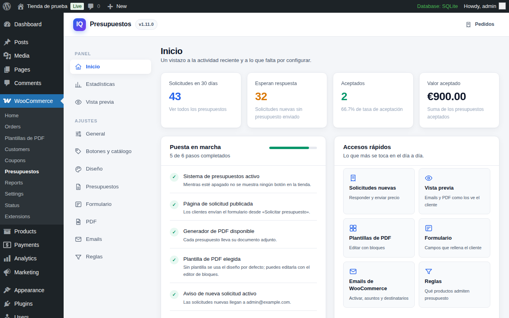
Instalación y puesta en marcha
- Instala el plugin En Plugins›Añadir nuevo›Subir plugin, elige
imagina-woo-quotes.zipy actívalo. WooCommerce debe estar activo. El zip ya incluye la librería de PDF; no hace falta instalar nada más en el servidor. - Comprueba la página de solicitud Al activarse, el plugin crea la página «Solicitar presupuesto» con el bloque «Lista de presupuesto». Si prefieres otra página, ponle ese bloque o el shortcode
[iwq_quote_list]y elígela en WooCommerce›Presupuestos›General. - Revisa la lista de puesta en marcha La pestaña Presupuestos›Inicio muestra qué falta: sistema activo, página publicada, PDF disponible, plantilla elegida, aviso de nueva solicitud y protección contra spam. Cada punto pendiente enlaza a su ajuste.
- Elige diseño de emails y PDF En Emails escoge uno de los tres diseños y tu logotipo; en PDF la plantilla, el logotipo y el tamaño de papel. Compruébalo todo en Vista previa sin enviar nada.
- Haz una prueba completa Entra en la tienda, pide presupuesto de un producto, envíalo y gestiónalo desde WooCommerce›Pedidos. En dos minutos habrás visto el flujo entero.
Actualizar Sube el zip nuevo desde Plugins›Añadir nuevo›Subir plugin y elige «Reemplazar el actual». Los ajustes, los presupuestos y las plantillas se conservan.
Lo que ve el cliente
El botón
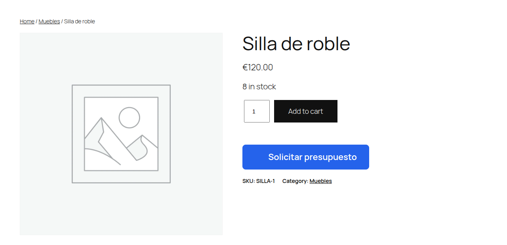
Aparece en la ficha de producto, debajo o encima del botón de compra según prefieras, y opcionalmente en el catálogo y en el carrito. En productos variables, el cliente elige primero la variación. Cuando un producto ya está en la lista, el botón cambia su texto y lleva a la página de solicitud.
El panel lateral
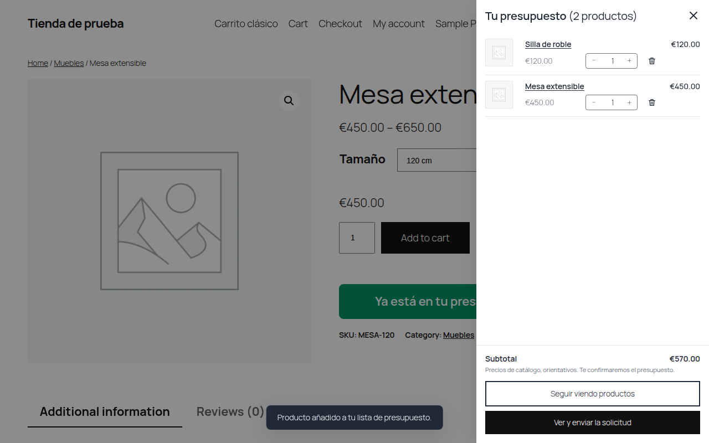
Al añadir un producto se abre un panel con la lista, en el mismo estilo que el mini carrito de WooCommerce: imagen, nombre, precio de catálogo, control de cantidad con más y menos, papelera, subtotal orientativo y dos botones: seguir viendo productos o ir a la solicitud. Puedes cambiar su lado, ancho, textos, colores y densidad en Diseño›Panel lateral.
La página de solicitud
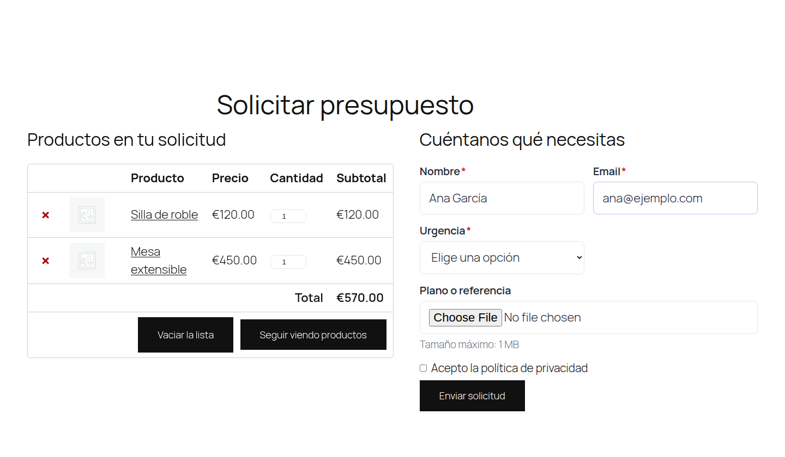
Muestra la lista de productos con la misma tabla que el carrito de WooCommerce (cantidad, subtotal y total) y el formulario. Puede ir en una columna o en dos. Al enviar, el cliente ve un mensaje de confirmación o se le lleva a la página de agradecimiento que hayas elegido. El formulario se envía sin recargar la página y marca los errores junto a cada campo.
Mi cuenta
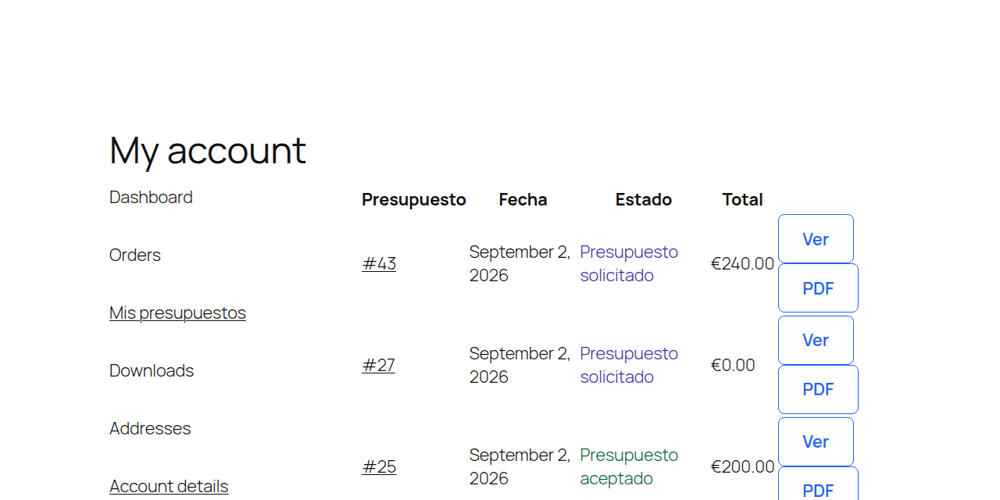
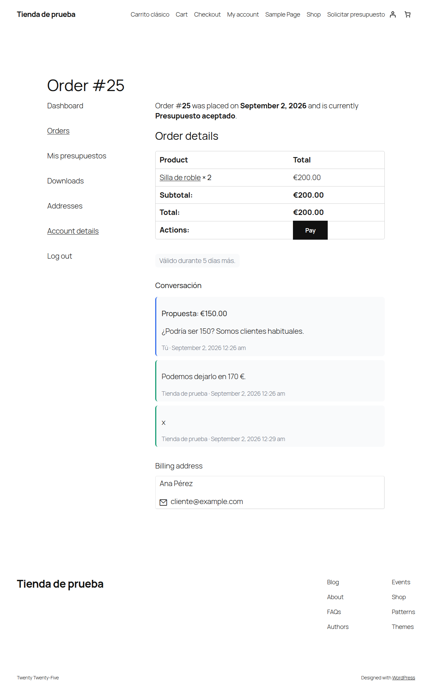
Los clientes registrados tienen una sección «Presupuestos» en Mi cuenta con todos los suyos: número, fecha, estado y total. Dentro de cada uno pueden descargar el PDF, aceptar, rechazar o proponer otro precio, y ver la conversación con la tienda. Los visitantes sin cuenta gestionan todo desde los enlaces del email.
Aceptar y pagar
El email «Presupuesto enviado» y el PDF llevan enlaces firmados de aceptar y rechazar, válidos solo para ese presupuesto. Al aceptar, el cliente va a la página de pago de WooCommerce con los métodos de pago de tu tienda. Puedes desactivar la redirección al pago si prefieres cobrar de otra forma.
Gestionar un presupuesto
Cada presupuesto es un pedido en WooCommerce›Pedidos. Ahí tienes las líneas, el cliente, las notas y el historial, más dos cajas del plugin: Presupuesto (vencimiento, plantilla de PDF, botón «Ver el PDF» y la conversación con el cliente) y Datos de la solicitud (las respuestas del formulario y los archivos adjuntos).
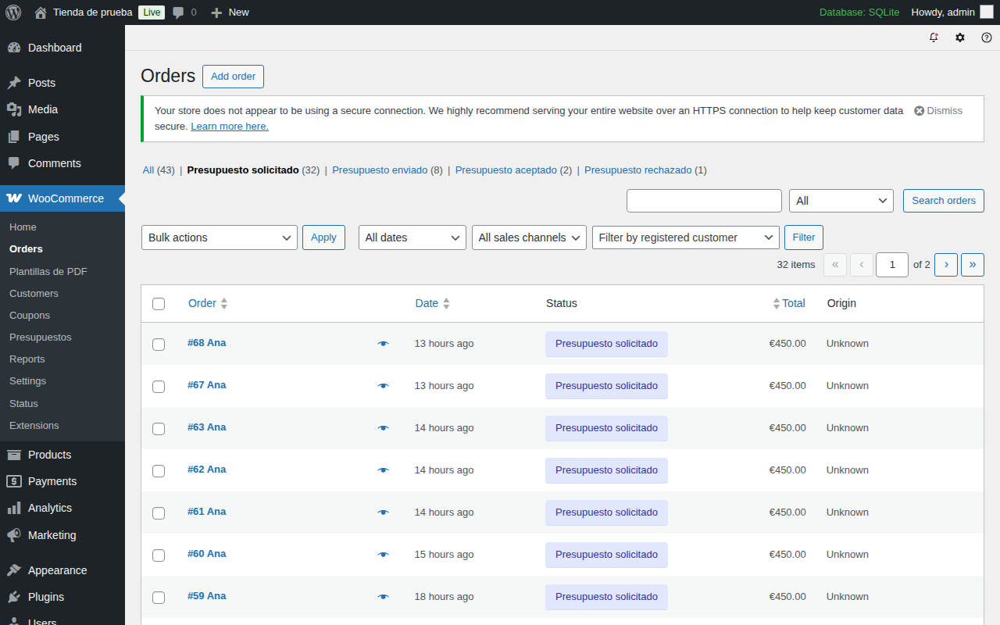
Estados
| Estado | Qué significa | Qué puedes hacer |
|---|---|---|
| Presupuesto solicitado | Acaba de llegar. Tiene los precios de catálogo como importe orientativo. | Editar líneas y precios, y enviarlo. |
| Presupuesto enviado | El cliente tiene el email con el PDF y los enlaces. Cuenta la validez. | Reenviarlo si cambias algo, responder a contraofertas, aceptar o rechazar en su nombre. |
| Presupuesto aceptado | El cliente aceptó. Falta el pago. | Esperar el pago o marcarlo como pagado si cobras fuera. |
| Presupuesto rechazado | El cliente lo rechazó, con motivo opcional en las notas. | Editar y volver a enviarlo con otra propuesta. |
| Presupuesto vencido | Pasó la fecha de validez sin respuesta. | Ampliar la validez y reenviarlo. |
| Procesando / Completado | Pagado. Ya es un pedido normal de WooCommerce y cuenta como venta. | Lo habitual: preparar, enviar, completar. |
Valorar y enviar
- Abre el pedido Desde Pedidos, filtrando por «Presupuesto solicitado», o desde los accesos de Presupuestos›Inicio.
- Ajusta las líneas Cambia precios, cantidades, añade o quita productos y aplica descuentos como en cualquier pedido. Mientras el presupuesto está solicitado, enviado o vencido, las líneas siguen editables.
- Elige el vencimiento y la plantilla En la caja «Presupuesto» puedes fijar la fecha de vencimiento (vacía para que no venza) y una plantilla de PDF distinta de la general.
- Envíalo En «Acciones del pedido» elige «Enviar el presupuesto al cliente» y pulsa el botón de aplicar. El plugin recalcula totales, fija la validez, genera el PDF definitivo, pasa el pedido a «Presupuesto enviado» y manda el email.
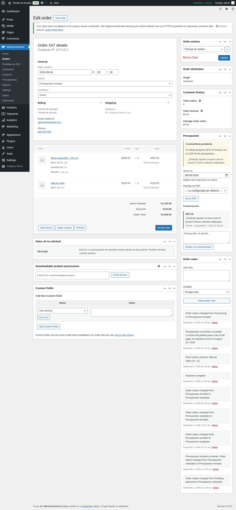
Cambiar el estado a mano no envía el correo. Si eliges «Presupuesto enviado» en el desplegable de estado, el pedido cambia pero el cliente no recibe nada. El envío siempre va por la acción «Enviar el presupuesto al cliente». Así un cambio de estado accidental nunca dispara un email.
Si el presupuesto mejora el precio de catálogo, el email y el PDF muestran el precio original tachado. Puedes regenerar el PDF en cualquier momento con la acción «Regenerar el PDF».
Contraofertas y vencimiento
Con las contraofertas activadas, el cliente puede proponer otro importe desde Mi cuenta o desde el enlace del email, con un comentario. Recibes el email «Contraoferta del cliente» y en la caja «Presupuesto» aparece la propuesta con la conversación completa. Puedes responder con un mensaje, ajustar las líneas y reenviar el presupuesto, o aceptar en nombre del cliente.
La validez se calcula al enviar a partir de los «Días de validez». Un proceso diario, a las tres de la madrugada, marca como vencidos los presupuestos que pasaron su fecha y envía el recordatorio con la antelación que hayas configurado. Reenviar un presupuesto vencido lo devuelve a «enviado» con una validez nueva.
Emails
Son seis emails de WooCommerce. Se activan, desactivan y personalizan (asunto, destinatario) en WooCommerce›Ajustes›Emails, como el resto. Su diseño se elige una vez para todos en Presupuestos›Emails.
| Para | Cuándo se envía | ||
|---|---|---|---|
| Nueva solicitud de presupuesto | Administrador | Al llegar una solicitud. | Sí |
| Solicitud recibida | Cliente | Al llegar una solicitud, como confirmación. | Sí |
| Presupuesto enviado | Cliente | Al usar «Enviar el presupuesto al cliente». Lleva los botones de aceptar y rechazar. | Sí |
| Respuesta del cliente | Administrador | Cuando el cliente acepta o rechaza. | No |
| Contraoferta del cliente | Administrador | Cuando el cliente propone otro precio. | No |
| Recordatorio de vencimiento | Cliente | Los días de antelación configurados antes de vencer. | Sí |
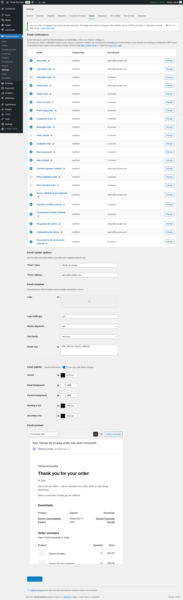
Diseños
Moderno
Tarjeta blanca con barra de color, resumen destacado y botones grandes. Es el diseño por defecto.
Minimalista
Texto sobre fondo blanco, sin tarjetas ni colores de fondo. Sobrio y muy legible.
Como WooCommerce
Usa la cabecera, el pie y los colores configurados en WooCommerce, para encajar con los demás emails de la tienda.
Vista previa y pruebas
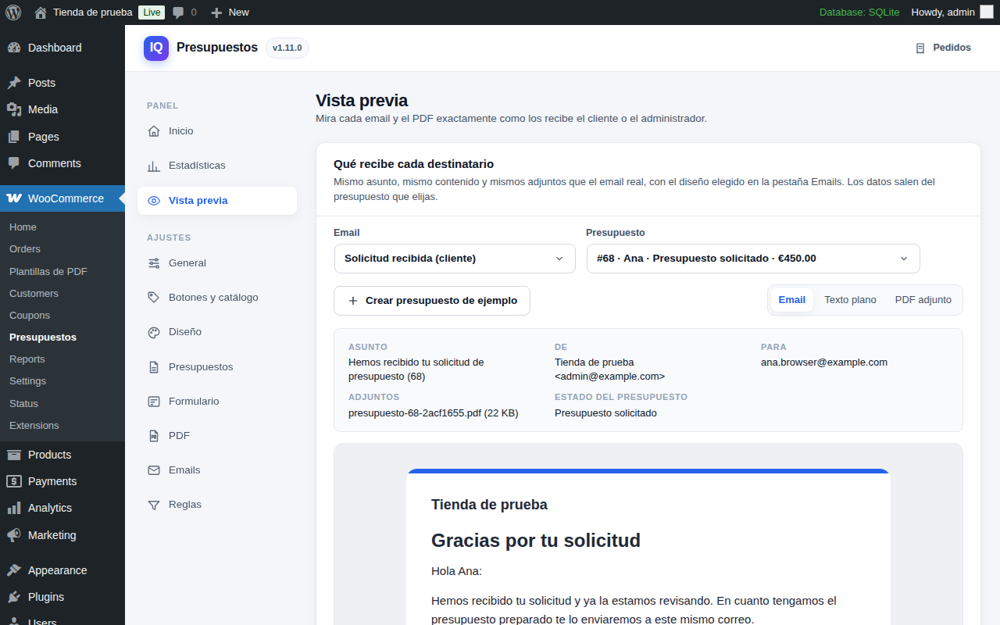
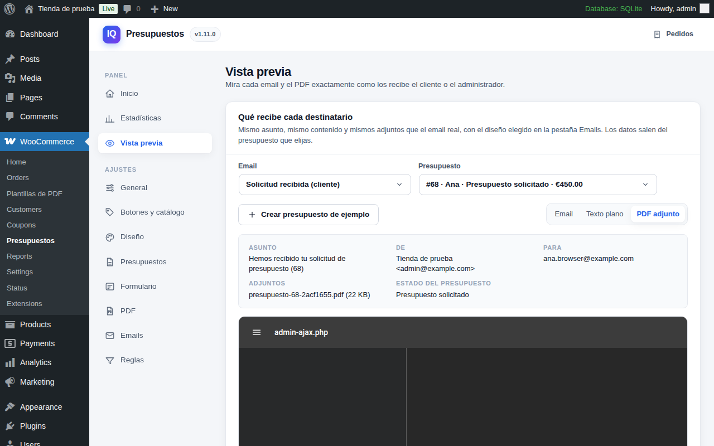
En Presupuestos›Vista previa eliges un email y un presupuesto y ves exactamente lo que recibe el destinatario: asunto, remitente, adjuntos y contenido, en HTML, texto plano o el PDF adjunto. Si el email está desactivado en WooCommerce, lo avisa. Puedes enviar una prueba a cualquier dirección y, si la tienda aún no tiene presupuestos, crear uno de ejemplo con descuento, validez y contraoferta.
PDF y plantillas
Cada presupuesto lleva un PDF que se genera al enviarlo y se adjunta a los emails. El cliente también lo descarga desde Mi cuenta. Se guarda en una carpeta protegida y se regenera solo si el pedido o la plantilla cambian.
Plantillas con bloques
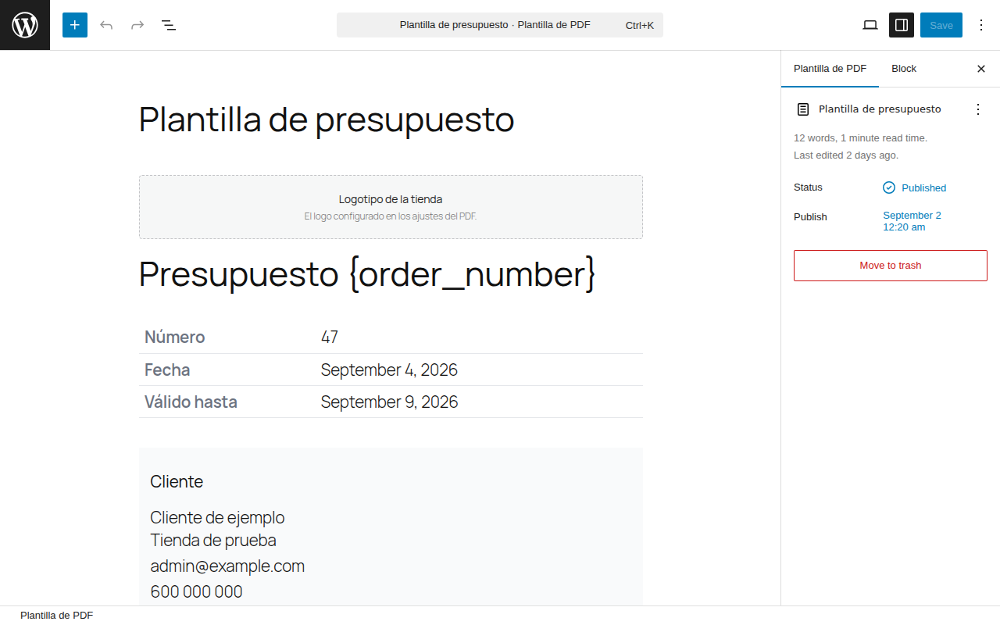
Las plantillas se editan en WooCommerce›Plantillas de PDF con el editor de bloques de WordPress. Puedes tener varias y elegir una por defecto en Presupuestos›PDF o una distinta en cada pedido. Combina texto, encabezados, imágenes y columnas con estos siete bloques del plugin, que en el editor se muestran ya rellenos con datos de un presupuesto real o de ejemplo:
| Bloque | Qué imprime |
|---|---|
| Logotipo de la tienda | El logo de los ajustes del PDF, o el del tema. |
| Datos del presupuesto | Número, fecha de la solicitud y fecha de vencimiento. |
| Datos del cliente | Nombre, empresa, dirección de facturación, email y teléfono. |
| Tabla de productos | Líneas con cantidades y precios; con opciones para mostrar imágenes y SKU. Respeta los precios ocultos. |
| Totales del presupuesto | Subtotal, impuestos, envío y total. |
| Respuestas del formulario | Lo que el cliente escribió al solicitar el presupuesto. |
| Botones de respuesta | Enlaces para aceptar o rechazar, solo mientras el presupuesto admite respuesta. |
Marcadores de texto
Dentro de cualquier párrafo o encabezado de la plantilla puedes escribir estos marcadores, que se sustituyen al generar el documento:
| Marcador | Se sustituye por |
|---|---|
{order_number} | Número del presupuesto |
{order_date} | Fecha de la solicitud |
{expiry_date} | Fecha de vencimiento |
{customer_name} | Nombre completo del cliente |
{customer_email} | Email del cliente |
{customer_phone} | Teléfono del cliente |
{company} | Empresa del cliente |
{quote_total} | Importe total |
{quote_status} | Estado del presupuesto |
{accept_url} | Enlace para aceptar |
{reject_url} | Enlace para rechazar |
{site_title} | Nombre de la tienda |
{site_url} | Dirección de la tienda |
El nombre del archivo admite {order_number}, {order_id}, {date} y {site_title}. El generador entiende CSS 2.1: tablas, márgenes y colores sí; flexbox y grid no.
Formulario
En Presupuestos›Formulario construyes el formulario arrastrando campos. Cada campo tiene etiqueta, tipo, marcador de posición, texto de ayuda, ancho (fila completa, media o un tercio), si es obligatorio y si está activo.
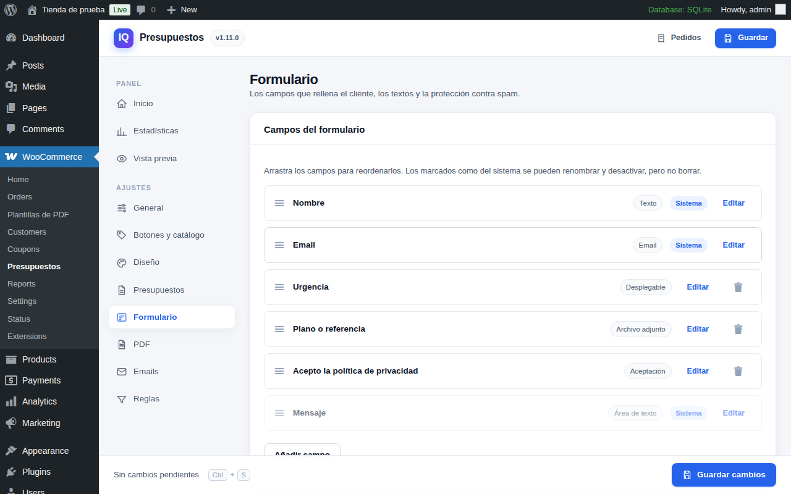
Campos del sistema
Nombre, apellidos, email, teléfono, empresa y mensaje vienen de serie. Puedes renombrarlos y desactivarlos, pero no borrarlos: el email es la forma de contactar al cliente y crear su presupuesto.
Tipos de campo
Texto, email, teléfono, número, área de texto, desplegable, selección múltiple, opción única, casillas, país, provincia o estado, fecha, hora, archivo adjunto, aceptación (casilla obligatoria, útil para la política de privacidad) y encabezado para separar secciones.
Guardar en el pedido como
Cualquier campo puede enlazarse con un dato de facturación del pedido (nombre, apellidos, empresa, email, teléfono, dirección, ciudad, provincia, código postal, país) o con la nota del pedido. Lo que el cliente escriba ahí aparece en el lugar habitual de WooCommerce, y el resto de respuestas en la caja «Datos de la solicitud».
Adjuntos
Los archivos se guardan en una carpeta protegida y solo se descargan desde el admin con un enlace firmado. Por defecto se admiten imágenes, PDF, Office, CSV, TXT, ZIP y planos DWG y DXF; cada campo de archivo puede limitar sus extensiones, y el tamaño máximo se fija en la pestaña.
Protección contra spam
El formulario lleva siempre un límite de solicitudes por hora e IP. Además puedes activar reCAPTCHA v3 (invisible) o v2 (casilla) con tus claves de Google; el script solo se carga en la página del formulario.
Botones, precios y reglas
Dónde aparece el botón
Ficha de producto (encima o debajo del botón de compra), catálogo y carrito. Al añadir puede abrirse el panel lateral o llevar directamente a la página de solicitud. Los textos del botón se cambian aquí.
Ocultar precios y compra
Puedes ocultar los precios a todos o solo a ciertos roles, sustituyéndolos por un texto como «Precio bajo consulta». También puedes quitar la compra: el producto deja de ser comprable de verdad, no solo se esconde el botón. Un presupuesto de un producto con precio oculto no muestra importes al cliente hasta que tú se los envías.
Reglas
En Presupuestos›Reglas decides el alcance: todo el catálogo o solo lo que incluyas por categorías, etiquetas y productos, con exclusiones por los mismos criterios, condición de stock (solo agotados o solo con stock) y si entran los productos externos y agrupados. En General limitas quién puede pedir presupuesto: visitantes sin cuenta y roles concretos.
Por producto
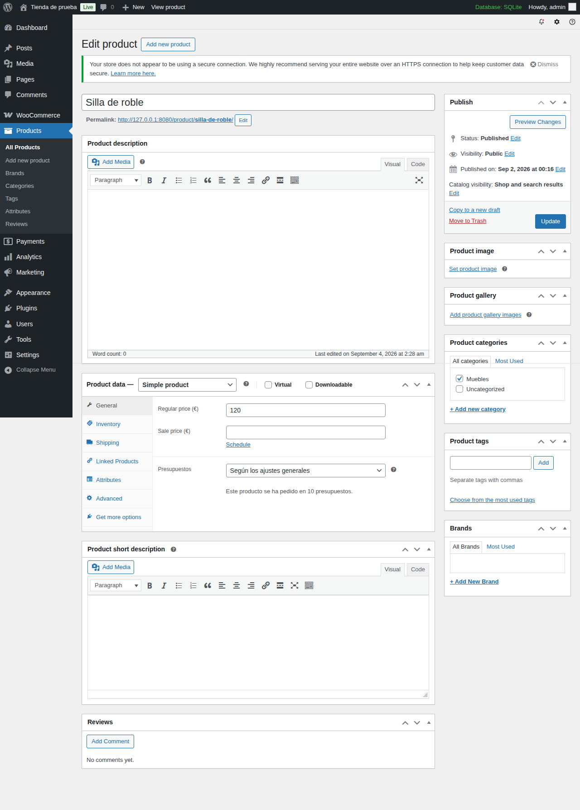
Cada producto tiene un ajuste «Presupuestos» en su pestaña General: según los ajustes generales, permitir presupuesto, solo presupuesto (oculta precio y compra de ese producto) o nunca presupuestar. También verás cuántas veces se ha pedido presupuesto de ese producto, y una columna ordenable en el listado.
Diseño
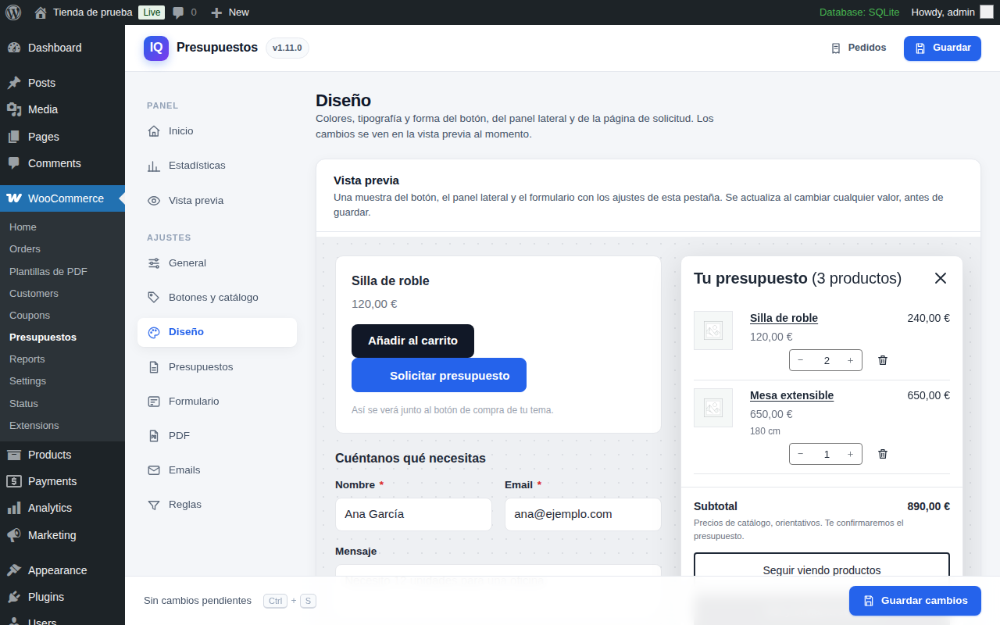
La pestaña Presupuestos›Diseño tiene una vista previa arriba que cambia al instante con cada ajuste, antes de guardar. Los valores vacíos heredan del tema; con los valores por defecto el plugin no añade ninguna hoja de estilos extra.
Colores y forma
Color principal y sus variantes, textos, fondos, bordes, redondeo general y modo oscuro automático.
Botón
Relleno o contorno, tipografía, tamaño, grosor, mayúsculas, relleno, redondeo hasta píldora, sombra y ancho completo; color de los enlaces.
Panel lateral
Título y contador, densidad de filas, tamaño de letra y miniaturas, lado y ancho, cabecera, velo, subtotal con nota, textos, disposición, tamaño y colores de los dos botones.
Página de solicitud
Tabla como el carrito o lista compacta, una o dos columnas, ancho en escritorio, reparto y separación de columnas, lista fija al hacer scroll, tarjetas, miniaturas y estilo de los campos.
Con la tabla tipo carrito y el panel lateral, los botones usan las clases de botón de tu tema, así que se ven como los del carrito sin configurar nada. Para lo que no cubran los ajustes hay un campo de CSS adicional que se imprime solo donde carga el plugin.
Informes y Analytics
Un presupuesto no es una venta hasta que se paga. Por eso los cinco estados de presupuesto quedan fuera de los informes de WooCommerce y de WooCommerce Analytics, no descuentan stock y no suman en el contador de ventas del producto. Cuando el cliente paga, WooCommerce pasa el pedido a «Procesando» y desde ese momento cuenta como cualquier otro.
En Presupuestos›Presupuestos›Informes y listado de pedidos decides dos cosas:
- Fecha de la venta. Al pagarse un presupuesto aceptado, el pedido puede fecharse en el momento del pago (recomendado, así Analytics lo cuenta el día que se vendió) o conservar la fecha de la solicitud. La fecha original queda anotada en el pedido.
- Vista «Todos» de Pedidos. Puedes ocultar ahí los presupuestos para que solo aparezcan las ventas; siguen en sus filtros por estado.
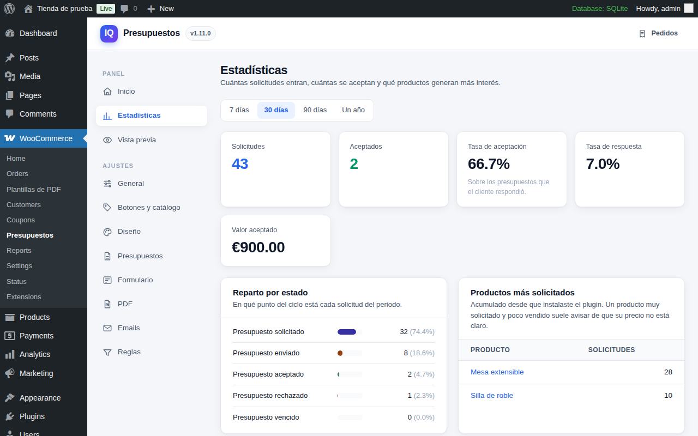
Las Estadísticas del plugin muestran, por periodo, cuántas solicitudes entran, cuántas se aceptan, la tasa de aceptación y de respuesta, el valor aceptado, el reparto por estado y los productos más solicitados. Un producto muy solicitado y poco vendido suele avisar de que su precio no está claro.
Bloques y shortcodes
| Elemento | Bloque | Shortcode | Notas |
|---|---|---|---|
| Lista y formulario | Lista de presupuesto | [iwq_quote_list] | Admite width="content", "wide" o "full". La alineación del bloque en el editor manda sobre el ajuste de ancho. |
| Contador con enlace al panel | Contador de presupuesto | [iwq_quote_count label="Presupuesto" icon="yes"] | Para cabeceras y menús. Se actualiza sin recargar. |
| Botón de un producto | — | [iwq_quote_button id="123"] | Para páginas de aterrizaje o contenidos fuera de la ficha. |
Referencia de ajustes
Todo está en WooCommerce›Presupuestos. Guarda con el botón de la barra inferior o con Ctrl + S; la barra avisa si hay cambios sin guardar.
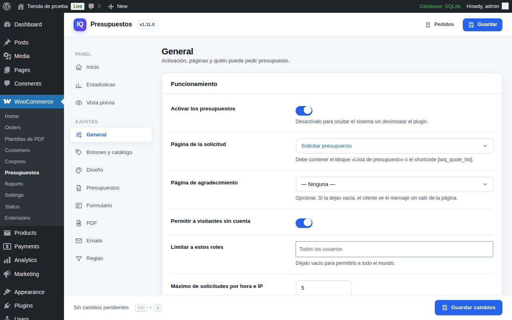
General
| Ajuste | Qué hace |
|---|---|
| Activar los presupuestos | Apaga el sistema sin desinstalar: desaparecen los botones y la página de solicitud queda vacía. |
| Página de la solicitud | La página con el bloque «Lista de presupuesto» o el shortcode. |
| Página de agradecimiento | Opcional. Vacía, el cliente ve el mensaje sin salir de la página. |
| Permitir a visitantes sin cuenta | Si está apagado, solo los usuarios registrados ven el botón. |
| Limitar a estos roles | Vacío, todo el mundo. Con roles, solo ellos (y «Visitantes sin cuenta» si lo incluyes). |
| Máximo de solicitudes por hora e IP | Límite contra el envío masivo. Cero lo desactiva. |
Botones y catálogo
| Ajuste | Qué hace |
|---|---|
| Texto del botón / cuando ya está añadido | Los dos textos del botón. |
| Mostrar en la ficha / Posición en la ficha | Debajo o encima del botón de compra. |
| Mostrar en el catálogo | Botón en las cuadrículas de productos. |
| Mostrar en el carrito | Botón para pasar el carrito entero a presupuesto. |
| Abrir el panel al añadir / Ir a la página al añadir | Qué pasa justo después de añadir. |
| Ocultar precios / Texto en lugar del precio / solo a estos roles | Sustituye el precio por un texto, para todos o para ciertos roles. |
| Ocultar el botón de compra / solo a estos roles | El producto deja de ser comprable, para todos o para ciertos roles. |
Presupuestos
| Ajuste | Qué hace |
|---|---|
| Los presupuestos vencen / Días de validez | La validez se cuenta desde el envío. Cada pedido puede tener una fecha propia. |
| Enviar recordatorio / Días de antelación | Email «Recordatorio de vencimiento» al cliente. |
| Permitir contraofertas del cliente | El cliente puede proponer otro precio en vez de solo aceptar o rechazar. |
| Llevar al pago tras aceptar | Al aceptar, el cliente va a la página de pago del pedido. |
| Cantidad mínima / máxima por línea | Cero para no imponer límite. |
| Fecha de la venta | La del pago (recomendado) o la de la solicitud, al convertirse en pedido. |
| Ocultar los presupuestos de la vista «Todos» | Solo se ven en sus filtros por estado. |
Formulario
| Ajuste | Qué hace |
|---|---|
| Campos del formulario | El constructor: arrastra para ordenar, «Editar» para configurar, «Añadir campo» para crear. |
| Título sobre el formulario / Texto del botón de envío / Mensaje tras enviar | Los textos de la página de solicitud. |
| Texto de privacidad | Debajo del formulario. Usa [privacy_policy] para enlazar la política. |
| Mostrar el formulario con la lista vacía | Permite pedir presupuesto sin productos, solo con el mensaje. |
| Precargar los datos del cliente registrado | Rellena nombre, email, teléfono y dirección desde su cuenta. |
| reCAPTCHA: activar, versión, claves, puntuación mínima | Claves de Google reCAPTCHA. En v3, puntuación entre 0 y 1 (0,5 por defecto). |
| Tamaño máximo por archivo (MB) | Límite de los campos de archivo adjunto. |
| Ajuste | Qué hace |
|---|---|
| Generar PDF / Adjuntarlo al email | Interruptores generales del documento. |
| Plantilla | La plantilla por defecto; cada pedido puede usar otra. |
| Logotipo | Vacío, se usa el logo del tema. |
| Nombre del archivo | Admite {order_number}, {order_id}, {date} y {site_title}. |
| Tamaño / Orientación | A4, Carta u Oficio; vertical u horizontal. |
| Incluir los enlaces de aceptar y rechazar | Botones dentro del PDF mientras admite respuesta. |
| Tachar el precio de catálogo si el presupuesto mejora | Muestra el precio original tachado junto al presupuestado. |
| Pie de página / Texto del pie / CSS adicional | Pie del documento y estilos extra (CSS 2.1). |
Emails
| Ajuste | Qué hace |
|---|---|
| Diseño | Moderno, Minimalista o Como WooCommerce, para los seis emails. |
| Color de acento | Botones y barra superior. Vacío: azul, o el color de WooCommerce en el diseño «Como WooCommerce». |
| Logotipo | Vacío, se usa el del PDF o el del tema. |
| Pie de los emails | Vacío, nombre y dirección de la tienda. |
Reglas
| Ajuste | Qué hace |
|---|---|
| Ofrecer presupuesto en | Todo el catálogo, o solo lo que indiquen las inclusiones. |
| Según el stock | Sin condición, solo agotados o solo con stock. |
| Incluir productos externos y agrupados | Por defecto quedan fuera. |
| Inclusiones / Exclusiones | Categorías, etiquetas y productos. Las exclusiones ganan a las inclusiones. |
Preguntas frecuentes
- El botón no aparece en un producto
- Revisa, por este orden: que el sistema está activo en General, que el producto no está excluido en Reglas ni marcado como «Nunca presupuestar» en su ficha, la condición de stock, y si el visitante tiene un rol permitido. Los productos externos y agrupados requieren su interruptor en Reglas.
- El cliente no recibe el email del presupuesto
- Comprueba que usaste la acción «Enviar el presupuesto al cliente» y no solo el cambio de estado, que el email «Presupuesto enviado» está activo en WooCommerce›Ajustes›Emails, y que la tienda envía correo (un plugin SMTP ayuda). En Vista previa puedes mandarte una prueba.
- El PDF sale vacío o no se genera
- La pestaña Inicio indica si el generador está disponible. Si instalaste el plugin desde el zip publicado, la librería ya viene incluida. Si el pedido no tiene líneas con precio, la tabla queda vacía; regenera el PDF desde «Acciones del pedido» tras editar.
- Los presupuestos salen en Analytics como ventas
- Desde la versión 1.11 quedan excluidos automáticamente, incluido el histórico. Solo cuentan al pagarse.
- Aparece un aviso de incompatibilidad con características de WooCommerce
- El plugin declara compatibilidad con HPOS, los bloques de carrito y finalizar compra y el editor de productos nuevo. Si otro plugin retrasa la carga de este hasta validar una licencia, WooCommerce no ve la declaración y muestra el aviso; desaparece cuando el plugin carga con normalidad.
- La vista previa del PDF no se ve en Chrome
- Actualiza a la versión 1.9.6 o superior: Chrome no muestra PDF dentro de marcos aislados y el visor se ajustó.
- ¿Puedo cambiar los textos que ve el cliente?
- Los del botón, panel, formulario y emails tienen ajuste propio. Para el resto, el plugin está preparado para traducirse con Loco Translate o cualquier herramienta de traducción de WordPress.
Para desarrolladores
Todas las plantillas del front, los emails y el PDF se sobreescriben desde el tema copiándolas a tu-tema/imagina-woo-quotes/ con la misma ruta relativa. Por ejemplo, el botón vive en quote/add-to-quote-button.php y las partes de los emails en emails/parts/.
Los estilos del front se rigen por variables CSS sobre .iwq: --iwq-accent, --iwq-text, --iwq-surface, --iwq-border, --iwq-radius, --iwq-drawer-width, --iwq-col-list, --iwq-col-form y --iwq-col-gap, entre otras. Los ajustes de la pestaña Diseño se traducen a esas variables.
// Acciones al cambiar de estado.
add_action( 'iwq_quote_sent', function ( $order_id, $quote ) { /* ... */ }, 10, 2 );
add_action( 'iwq_quote_accepted', function ( $order_id, $quote ) { /* ... */ }, 10, 2 );
add_action( 'iwq_quote_rejected', function ( $order_id, $quote ) { /* ... */ }, 10, 2 );
// Cargar los assets del plugin también en la portada.
add_filter( 'iwq_enqueue_assets', fn( $load ) => $load || is_front_page() );
// Ajustar el CSS generado desde la pestaña Diseño.
add_filter( 'iwq_design_css', fn( $css ) => $css . '.iwq-add-button{letter-spacing:.02em}' );Los presupuestos son objetos IWQ_Quote sobre un WC_Order: send(), accept(), reject(), get_expiry_date(), get_accept_url() y get_form_data() cubren lo habitual. Las peticiones AJAX del front usan los endpoints wc-ajax de WooCommerce con nonce; los enlaces de aceptar y rechazar van firmados y atados a la clave del pedido.